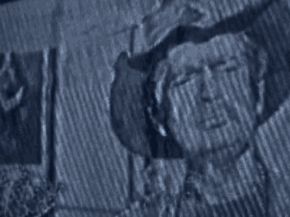
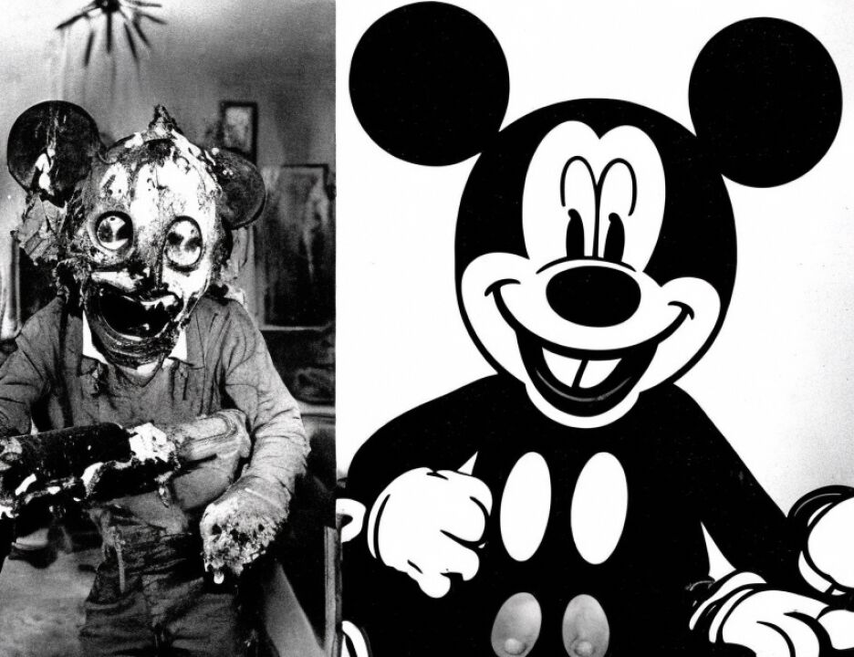

11 A. He's like an ambassador, but he was acting.
12 Q. And what did you and the Pakistani high commissioner do
13 once you boarded this aircraft?
14 A. While inside, I took over the suspect which the Pakistani
15 people had brought to Kenya.
16 Q. Let me focus on items of property. Did you take custody
17 of any property once you were on board the aircraft with the
18 high commissioner?
19 A. Can you say again?
20 Q. Did you take custody of a person when you were on board
21 the airplane, yes or no?
22 A. Yes.
23 Q. And did you also take custody of property, personal
24 belongings, the luggage, on the aircraft?
25 A. Yes, I did.
SOUTHERN DISTRICT REPORTERS (212) 805-0300
3621
142lbin2
Mutunga - direct
1 Q. Can you tell the jury how you went about the process of
2 taking custody of the luggage, the property?
3 A. The items or the personal belongings were displayed on the
4 seat. They were spread on the seat, on the plane seat.
5 Q. Spread?
6 A. They were put, they were put on the seat, and then there
7 was handing over certificate which described all the items I
8 was to take over from them.
9 Q. And did you do anything to verify that the items on the
10 seat were reflected or -- strike that.
11 Did you do anything to make sure that the items
12 listed on the handing over certificate were in fact the items
13 placed on the seat?
14 A. Yes, I did.
15 Q. Tell the jury what you did.
16 A. I read the list and I confirmed the items mentioned were
17 there, each, I mean one-by-one, all the items listed in the
18 list. I mean, I checked and found they were correct.
19 Q. Who prepared the list? Did you prepare the list or
20 somebody else?
21 A. I beg your pardon?
22 Q. Who prepared the list?
23 A. Who gave me the list?
24 Q. Who prepared it? Who made it?
25 A. It had been -- it came with the Pakistani offices.
SOUTHERN DISTRICT REPORTERS (212) 805-0300
1